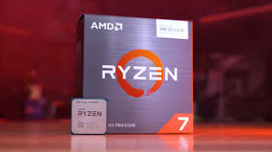
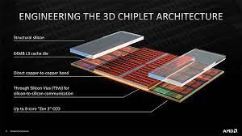

RYZEN 7 5800X3D: Conheça o CPU queridinho dos gamers e onde encontrar as melhores ofertas.

O AMD Ryzen™ 7 5800X3D é um processador de alto desempenho da arquitetura Zen3 da AMD. Ele é o primeiro processador para desktop que possui cache L3 empilhado, proporcionando 96MB incomparáveis de cache L3 emparelhado com núcleos ultra rápidos. Este modelo possui 8 núcleos otimizados para plataformas de jogos FPS e também funciona de maneira excelente para criadores que necessitam de velocidade e processamento dedicado

ESPECIFICAÇÕES:
Número de núcleos de CPU: 8 ,
Número de threads: 16
Clock de Max Boost: Até 4.5GHz ,
Clock básico: 3.4GHz